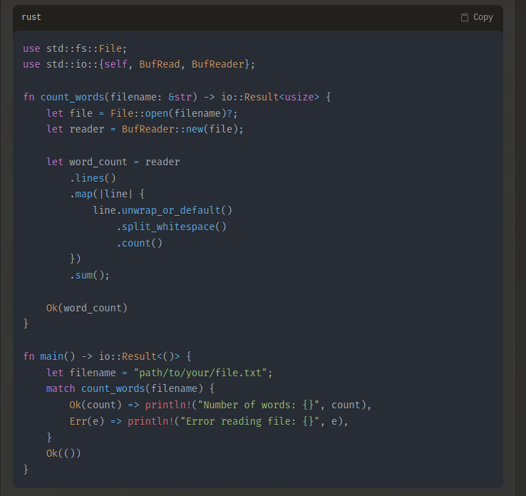
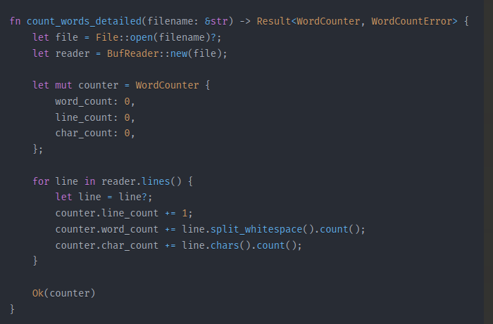

So for this one I have heavily used AI and took the opportunity to test Claude AI ( https://claude.ai )
For accuracy I’ve been using Sonnet 3.5.
This seems to be the new hype right now with a better / more accurate result than what OpenAI can propose with ChatGPT or Microsoft with Copilot ( also I think this is mainly OpenAI behind Copilot ).
Building Word Count cli tool
https://www.gnu.org/software/coreutils/manual/html_node/wc-invocation.html
One thing I found very interesting is that Claude AI proposed me two solutions.
Here was my prompt:
“in Rust how can I count the number of words from a text file ?”
And here was the two solution proposed:


What I found very interesting is that this seconde solution is very similar to the solution propose by the author of the book “Command-Line Rust”
You can check it out on his git repo dedicated for this book
https://github.com/kyclark/command-line-rust/tree/clap_v2/05_wcr
This is where it comes the interesting question, what will be the value of all those AI models when the have trained on all human produced data on Github ? They will probably move to Gitlab at some point :D ( spoiler they already have )
But think we will reach a limit seeing the pace at which they are eating data compared to the pace we are producing data on the WWW…
Or maybe the limit will be how fast we are able to build nuclear plant around the world ?
Anyway I think you have to be in the AI world to be able to see what will be the limit of this new set of tools.
I believe that the AI model will at some point specialize and never will be very good on general matters and we will see a proliferation of specialized models.
Back to my Rust
On this exercise, I tried to see if using AI engine on my learning path is beneficial to learn a new language. To be honest I’m still half way convinced.
The merit is that I could quickly unlock myself in building my tool, then from the code provided by the AI engine build on top of it.
The cons is that I’m afraid this a too easy way and doesn’t give me the skill set to find solution by myself with trial and error. Being so easy give me the impression that we are going to have brain lazyness and stop us from thinking and building stuff on our own.
I have the sentiment of loosing control over what I’m building, when I give away this skill to an AI engine which will make me over dependent on this tool.
So for the future I think I will be in and out to see if it helps me but I don’t chain me.
I can’t be this AI addict which will not be able to do anything without it.
Does AI improved your productivity ? Do you see it a net benefice for your and your company ?